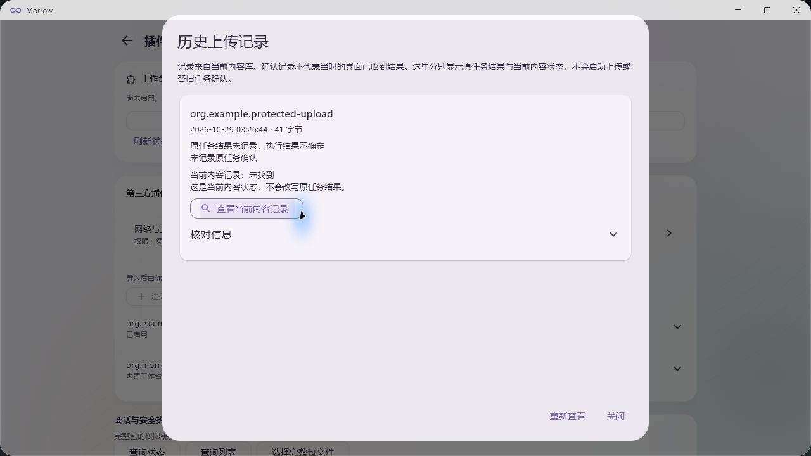
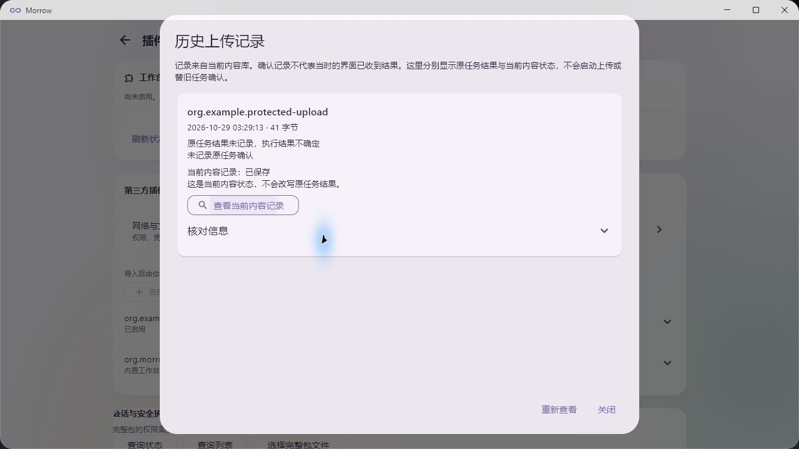
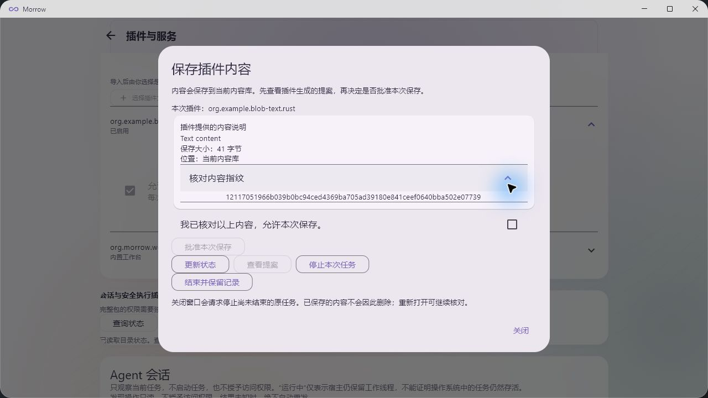

任务已暂停，
进度与源码已保存
等待恢复指令 · 2026-10-29P2 四组件冷编译与策略身份纯逻辑检查已完成，已开始的 SDK 构建正常收尾。VM047 已保存，新用例703尚未运行；完整 P2、当前源码 P3 复核、SDK 和发布资格仍开放。
暂停时已确认的进度
- 源码 a038：P/C/R/S 独立冷编译完成；固定策略身份通过18项纯逻辑方法和31个破坏输入验证，没有调用权限修改。
- 源码 a038：Host、Supervisor、历史观察器及完整 main Kernel 编译完成；新的窗口验收未启动。
- 源码 5fc113：原47步／九组638，以及一个 Rust 插件的41字节文本保存、历史和重开678专项通过；6个原窗口相关进程正常退出。
- case684 的策略身份错误保留 Unknown；修正不能改写历史清理结论。VM046 已完整校验归档，VM047 Saved，注册总数仍为4台。
恢复入口：先核对发布引入的报告／Git属性差异并重新绑定703的源码要求，再刷新环境就绪证据。703仍是准备状态；720/721、723、724/725均未运行。缓存保持在 D:\build_cache。
完整 P2、当前源码 P3 复核、SDK26、G04、SDK_FREEZE 和发布资格仍开放。下列为历次原始范围记录，其中“当前”均指记录当时的源码。
展开此前阶段的进展与原始范围
本轮完成了什么
旧 47 步／九门槛证据继续绑定原源码；本次未开展新的 VM 或窗口验收。目录监听、重命名和完整 SDK 资格仍需推进，以上数量不合并为发布通过率。
本阶段检查范围为宿主库，不包含全部目标和依赖。此前四个完整窗口的证据绑定原源码 3089c4a6；本次修改后尚未重跑窗口验收，也未因此关闭完整 P2、SDK 或发布门槛。
验收使用默认关闭的固定故障构建，正常程序没有这些故障标记；生产入口和通信策略未放宽。此前一次动画控件定位失败及一次提案过期保留原结果，未计入通过。当时的宿主检查有 59 项错误、35 项依赖警告；最新错误修复及限定通过见上方。完整 P2/P3、SDK 与发布资格继续开放。
同一源码的正常程序完成了 6 组三语言上传重开和 2 组真实中断历史验证，14 次监督关闭与 14 次独立读取均核对通过。构建复用了已核验依赖，未宣称冷编译。新补记入口的正式 Windows 异常收尾界面、完整 P2/P3、SDK 与发布门槛仍开放。
Core 迁移矩阵的 352 项检查保留其原始源码范围。当前默认原生程序与修正后 Dart 的输入关系已核对；早期两次界面超时和构建校验脚本错误均保留记录。预提交元数据记录的显式补全、完整 P2/P3、SDK 和发布资格仍开放。
查看本次正式 Windows 历史核对画面
提交前中断：原任务结果不确定，当前内容未找到。

提交后中断：内容已保存，原任务结果仍不确定、未确认。

三语言 6 组文本回归已正式纳入仓库，12 次关闭及 12 次独立内容读取通过；修正了验收工程缺失的本地依赖锁定项。完整 P2/P3、跨重启任务恢复与 SDK／发布资格仍开放。不同源码和不同范围的检查不累加为项目通过率。
Rust、C、C++ 另外完成 6 个实际原生自动界面用例（41 字节与 32768 字节），12 次监督关闭、12 次独立内容校验通过。样例 5 项、实际插件规划 21 项、旧上传回归 10 项通过；这几组范围不同，不累加为项目通过率。
仍待处理：宿主严格静态检查有 60 条既有问题；新两个辅助程序无新增诊断。跨重启 Unknown 恢复、目录 watch／rename、网络／账户／TLS、最终 P2/P3 与完整 SDK／发布继续开放。
查看本次真实窗口截图
下图来自正式 Windows 应用；仅 Rust 文本样例完成这次桌面流程，三语言自动界面证据单独记录。

重新打开后没有待处理任务历次专项进展（保留当时的范围与限制）
- Windows 正常执行：case329 的 47 步、92 帧、107 条记录和九门槛通过，原进程、线程、设置资源和临时权限均有闭合证据。47 步证据
- 连续拒绝：case335 在同一原始父进程内完成 17 次实际拒绝，共 799 步；没有用重启进程清空计数。17 次拒绝证据
- 正式应用 SDK：Rust312、C337、C++332 分别完成导入、启用、批准、真实选目录、70 条读取、退出确认和重开；独立 cancel340 通过。24 个原始进程正常退出。正式应用证据
- 独立消费者：64 项分发检查、92 项 Rust 方法、14 次原生程序与 3 个仓库外消费者分别通过；57 个冻结输入保持。方法范围不同，不合并成发布总分。独立消费者范围
查看源码与历史结果边界
已完成的 P2 实测绑定源码：f8492320dbf7e156bfccadae687f50362a7aafb4d1c58e90014170aae9b04f78。SDK 使用 canonical 305/309 的原始产物；334 单独核对了未参与产品构建的验收锁文件修正。报告更新后的工作区摘要不替换原始运行摘要。旧 Unknown 结果保留。
case329 审核器有一处旧案例显示标签，独立更正只修正展示名称；原始输入、285 项断言和原报告均保留。显示标签更正
Windows P2 与 P3
P2 的 f849 源码已完成正常执行和超过 16 次拒绝的实测；后续上传改动尚未重做整体验收。其余故障保留各自的历史源码身份；部分结果只证明失败被保留，并不证明资源完成回收。
| P2 要求 | 证据状态 |
|---|---|
| Refusal before resource creation | SCOPED_ACTUAL_READ_ONLY_CALLER_REFUSALS_AT_RECORDED_SOURCE |
| LogonUser explicit failure and null output | HISTORICAL_SCOPED_EVIDENCE_NOT_REBOUND |
| Partial and abnormal outputs | SCOPED_REAL_CREATION_WITH_QUALIFICATION_PARTIAL_AND_ALIASED_DELIVERY_OBSERVED |
| Token derivation and default DACL failures separately | SCOPED_REAL_NATIVE_REFUSALS_FIRST_FAILURE_RETAINED |
| Setup failure after account creation | HISTORICAL_SCOPED_EVIDENCE_NOT_REBOUND |
| Late creation result | SCOPED_CASE098_REAL_OUTPUTS_AND_INJECTED_LATE_DELIVERY |
| Handle close failure | SCOPED_REAL_NATIVE_CLOSE_REFUSAL_FIRST_FAILURE_AND_CHARGE_RETAINED |
| Helper and pipe created without Runner | HISTORICAL_SCOPED_EVIDENCE_NOT_REBOUND |
| Concurrent close duplicate consume wrong generation | HISTORICAL_SCOPED_EVIDENCE_NOT_REBOUND |
| Normal business full join ACK factory cleanup | PASS_CURRENT_SOURCE_ORIGINAL47_AND_NINE_REQUIRED_GROUPS |
| More than 16 clean refusals; Unknown remains charged | PASS_CURRENT_SOURCE_SEVENTEEN_ACTUAL_NATIVE_REFUSALS_SHARED_OWNER |
P3 编辑器：已有定义范围内的持久化、恢复、故障与手工输入证据；最新手工小键盘 Home 操作正常。最终源码和正式产品范围仍需整体核对，未据此宣称所有编辑器与辅助功能场景完成。
完整 SDK：保留全部十组门槛
正式界面目录专项通过。完整门槛继续包含持久上传、历史、目录变化、网络、批准与恢复，未缩减成当前已通过的子集。
| 门槛 | 范围 | 当前结论与缺口 | 状态 |
|---|---|---|---|
| G01 | 生产通道与批准 | 目录批准链已有正式界面证据；其余通道与故障矩阵继续。 | 开放 |
| G02 | 网络流与三语言 SDK | 原生消费者和分发已复验；账户、TLS 与完整生产恢复仍待完成。 | 开放 |
| G03 | HTTP 与账户 | 现有有界接口保留；完整账户、认证租约及目的地策略未闭合。 | 开放 |
| G04 | 文件目录与附件 | 三语言目录、持久上传与规划界面已有专项证据；Rust 文本桌面流程已通过，watch／rename 和异常持久恢复仍开放。 | 开放 |
| G05 | 异步依赖组合 | 继续验证根期限、取消、双方撤权、预算和实际线程退出。 | 开放 |
| G06 | 内容变化与 Cloud | 有限 changes 证据保留；长期观察、保留窗口与跨进程恢复待验收。 | 开放 |
| G07 | 历史与恢复 | 已知操作回执保留；各扩展的真实故障窗口和资源恢复矩阵待闭合。 | 开放 |
| G08 | 界面与第三方产品 | 正式应用目录和 Rust 文本保存入口专项通过；三语言文本自动界面通过，其余完整产品流程仍开放。 | 开放 |
| G09 | 平台 | 本次仅 Windows；其他平台按用户要求延期，不继承 Windows 结果。 | 延期 |
| G10 | 冻结与分发 | 64 项分发检查、57 份冻结输入核验通过；完整 SDK 冻结和发布仍开放。 | 开放 |
本轮新增清理：824 个已结束构建的中间文件，实际释放约 0.93 GiB；3,664 个保留文件哈希核对通过。本轮清理证据
环境与磁盘
缓存位置：D:\build_cache。累计清理 93,715,004,619 字节的可再生构建缓存；源文件、运行证据、交付物和需要保留的 VM 磁盘不在本次删除范围。
当前可用空间：C 盘 201.02 GiB · D 盘 7.00 GiB。共 4 台注册 VM，VM045 已在正常流程结束后保存状态。
| 虚拟机 | 当前状态 |
|---|---|
| Morrow Windows Acceptance 20261023 029 | Saved |
| Morrow Windows Acceptance 20261023 030 | Saved |
| Windows 11 开发环境 | Running |
| Morrow Windows Acceptance 20261027 045 | Saved |
数值采样：2026-10-29T00:44:57.3768914Z。本次构建期间观察到系统分页文件扩容，未修改其配置；后续编译降低并行度。剩余空间随运行变化。历史 Unknown 不作为干净环境重用。
继续推进
任务已恢复。继续补齐以下缺口，历史 Unknown 保持原结论。
- 完成剩余 P2 故障在最终源码上的核对与必要实测，保留失败、Unknown 和未运行结论。
- 四种补记故障已取得正式 Windows 窗口、原始关闭与独立读取证据；继续推进 watch／rename、其余产品范围及完整 SDK 矩阵。
- 完成 Windows 产品、P3、完整 SDK 和分发门槛后，再判断是否具备发布资格。